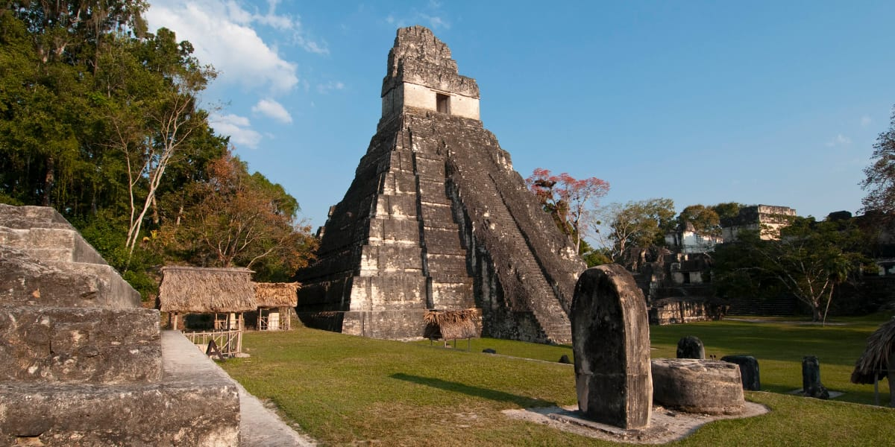
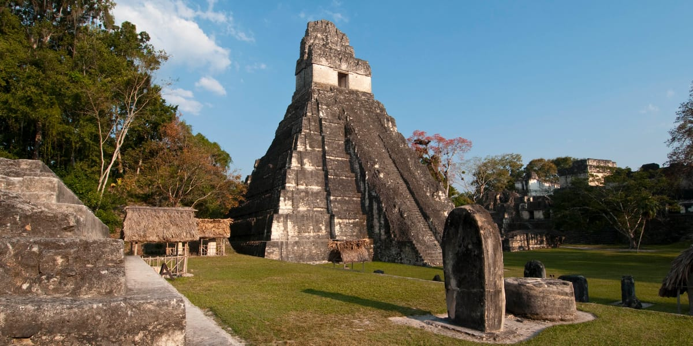

Tikal, una de las ciudades más importantes de la antigua civilización maya,
es un sitio arqueológico impresionante ubicado en el corazón de la selva
tropical de Petén. Este Patrimonio de la Humanidad de la UNESCO ofrece a
los visitantes la oportunidad de explorar monumentales pirámides, templos
y plazas rodeados de una exuberante vegetación. El Templo del Gran Jaguar
y el Templo de las Máscaras son algunas de las estructuras más emblemáticas,
destacando por su majestuosidad y la importancia ceremonial que tuvieron en su época.
Además de su valor histórico y arqueológico, Tikal es un destino ideal para
los amantes de la naturaleza. La biodiversidad que rodea las ruinas es sorprendente,
con avistamientos frecuentes de monos aulladores, tucanes y una gran variedad
de aves exóticas. Explorar Tikal es una experiencia que combina la fascinación
por una civilización antigua con la belleza de un entorno natural único,
convirtiéndolo en un destino imprescindible para cualquier viajero en Guatemala.


 
